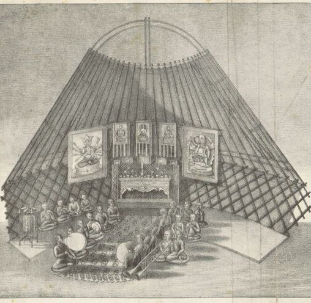
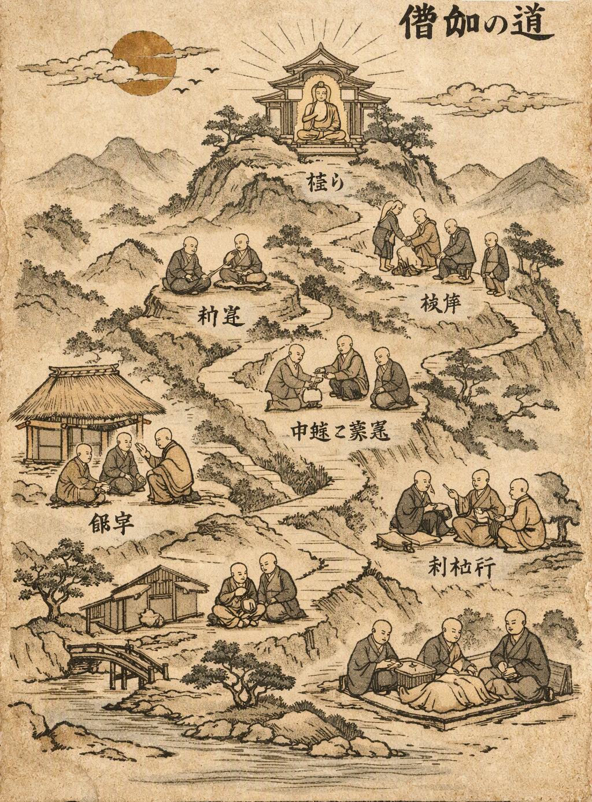
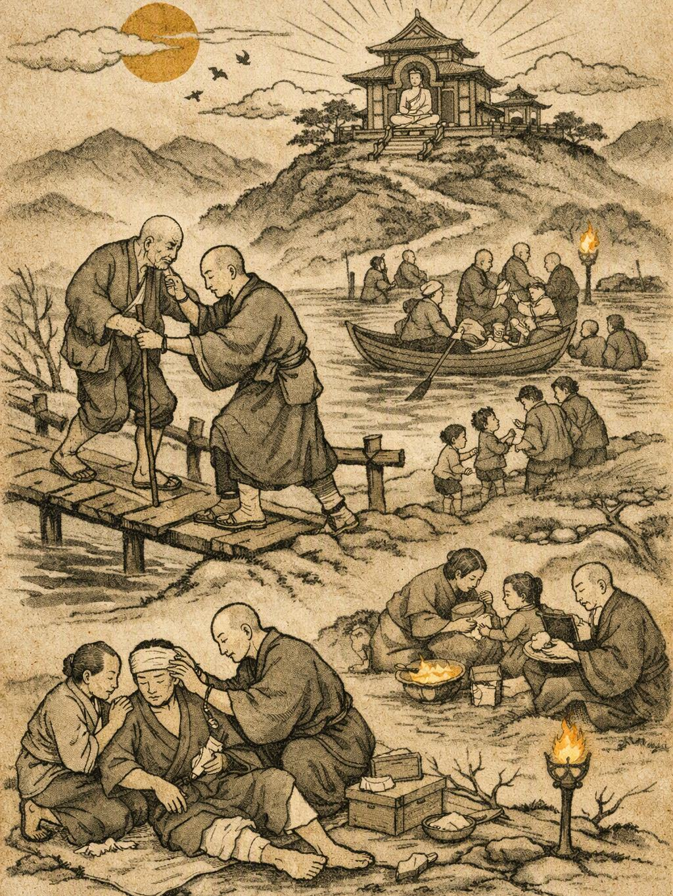
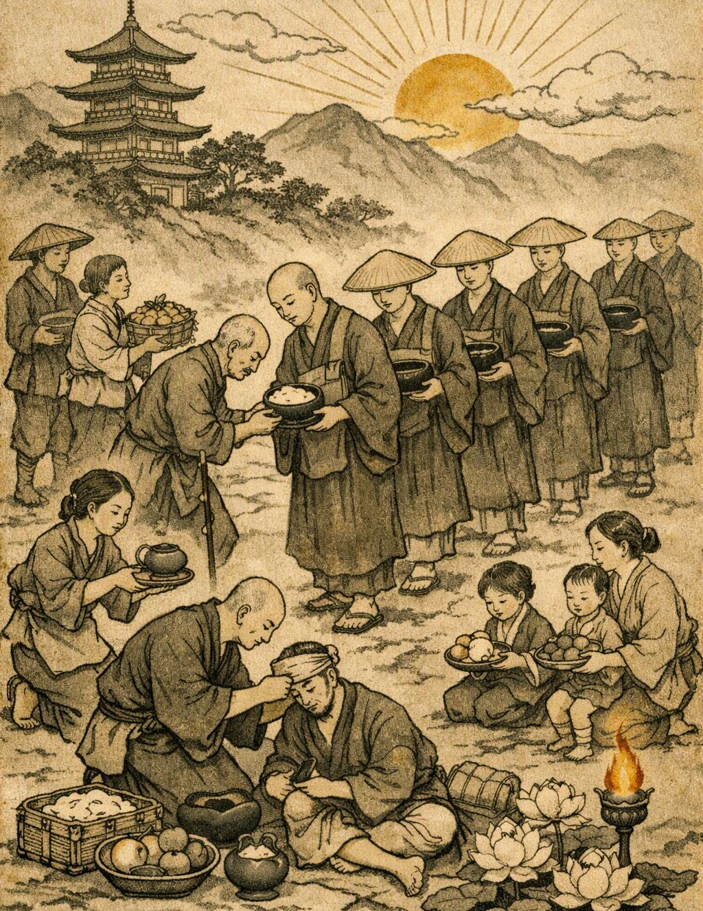

Паломничество
Паломничество - одна из важнейших частей жизни нашего храма. Каждый день, в часы наибольшей активности, монахи покидают стены храма и отправляются в путь.

Паломничество - одна из важнейших частей жизни нашего храма. Каждый день, в часы наибольшей активности, монахи покидают стены храма и отправляются в путь. Они идут не ради славы или богатства, а чтобы поддерживать связь с людьми, помогать тем, кто нуждается в помощи, и напоминать окружающим о Дхарме. Однако у паломничества есть и вполне земная причина. Храму необходимо существовать, а монахи не занимаются торговлей и не стремятся к накоплению богатств. Поэтому во время странствий Сангха принимает подношения от людей и собирает необходимое для жизни общины - прежде всего пищу.
Путь Сангхи
Монахи выходят из храма группой и направляются по заранее выбранному маршруту. Путь не является постоянным - каждый день монахи могут посещать разные места, деревни и поселения. Во время странствия монахи не должны просто молча идти от одного места к другому. Паломничество является временем для общения с миром. Монах может остановиться у крестьянина, поговорить с торговцем, помочь человеку донести груз, дать совет, выслушать чужую беду или просто провести некоторое время в разговоре.
Любая встреча может стать частью пути.


Помощь людям
Главная задача паломничества - не только найти пропитание для храма. Монах должен быть полезен тем, кого встречает на дороге. Если между людьми возник спор, монахи могут попытаться примирить стороны. Если кто-то нуждается в совете, монах может выслушать его. Если человек находится в беде, Сангха может попытаться помочь в пределах своих возможностей. Иногда помощь будет совсем простой: донести воду, найти потерявшегося человека, передать сообщение или оказать поддержку тому, кто оказался один.

Подношения
Одной из целей паломничества является получение подношений. Жители могут передавать монахам рис, овощи, фрукты, воду и другие необходимые для храма вещи. Полученное имущество не становится личной собственностью конкретного монаха. Всё принесённое возвращается в общину и используется для нужд храма. Монах не должен требовательно просить награду за помощь. Подношение является добровольным.
Если человек ничего не может дать, это не является причиной отказать ему в помощи.
Правила паломничества
Во время странствия монах остаётся представителем храма.
Он не должен использовать паломничество ради личной выгоды, провоцировать конфликты или намеренно вмешиваться в дела людей без необходимости.
Сангха не выходит на дорогу ради поиска неприятностей. Её цель - помогать, общаться, принимать подношения и распространять учение Дхармы.
Если же конфликт возникает перед монахами, они должны прежде всего стремиться сохранить спокойствие и найти мирное решение.
Мир приходит изнутри. Не ищи его снаружи.Будда Шьякмуни